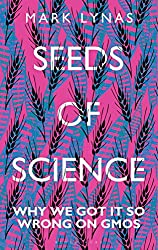
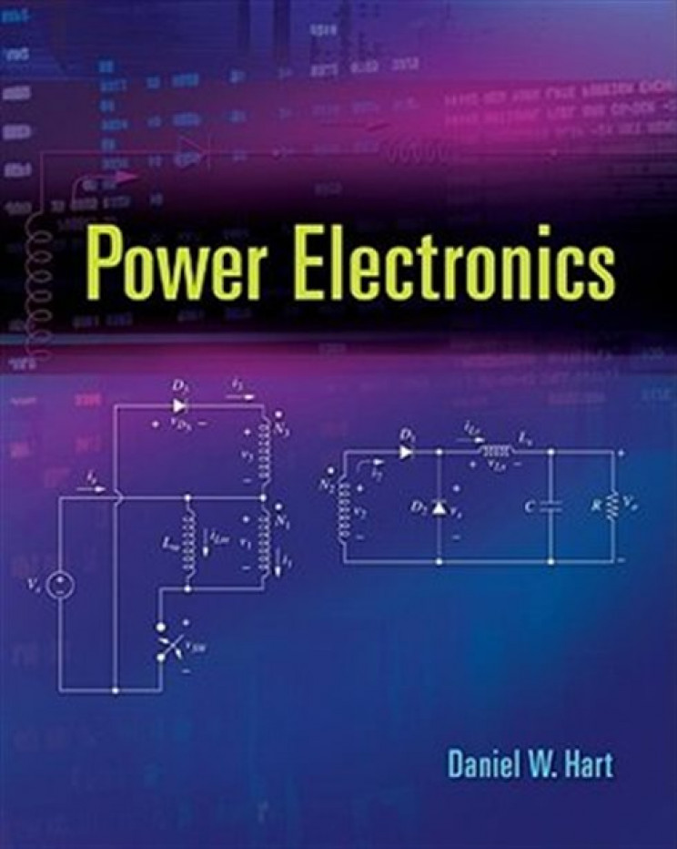
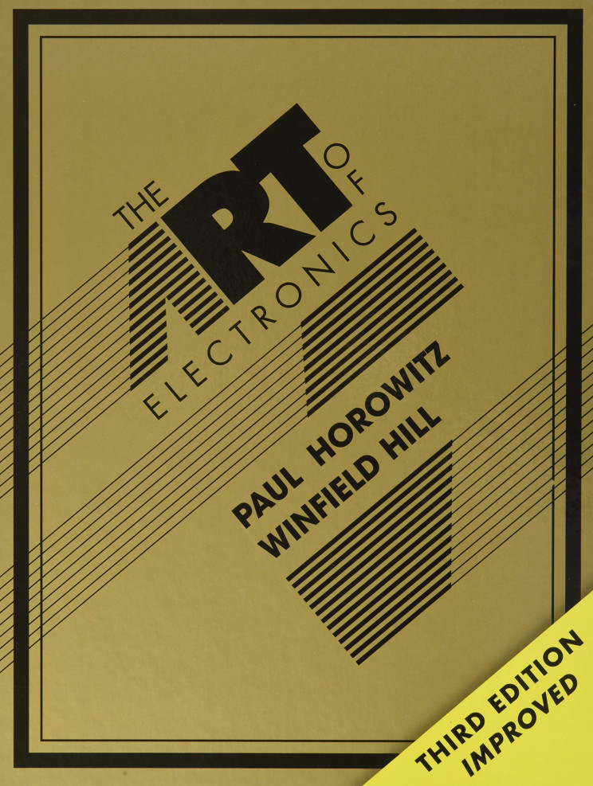
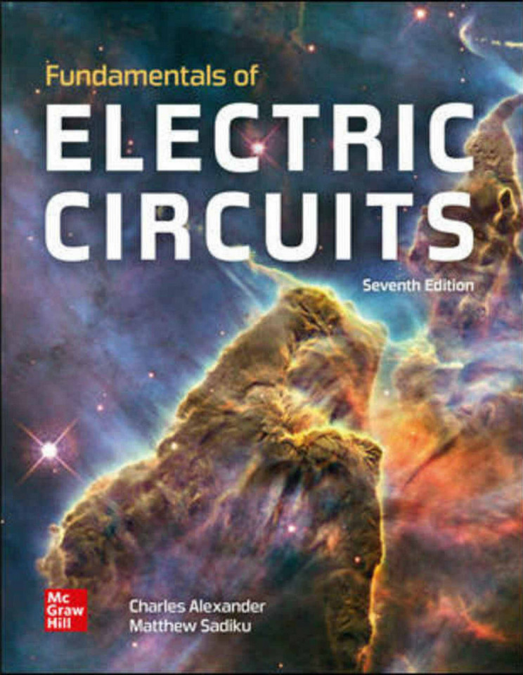
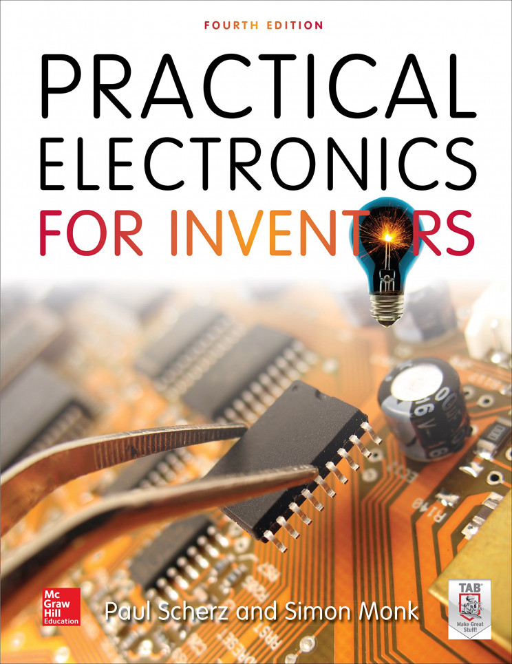

Unfolding as a journey down the Mississippi River, Rancher, Farmer, Fisherman tells the stories of five representatives of this stewardship movement: a Montana rancher, a Kansas farmer, a Mississippi riverman, a Louisiana shrimper, and a Gulf fisherman. In exploring their work and family histories and the essential geographies they protect, Rancher, Farmer, Fisherman challenges pervasive and powerful myths about American and environmental values.

Seeds of Science
In Seeds of Science, eco-activist Mark Lynas lifts the lid on the controversial story and misunderstood science of GMOs. In the mid-1990s, as the global media stirred up a panic about the risks of genetically modified crops, Lynas destroyed crop fields and spoke out in the press…until he realized he was wrong.

Power Electronics
Power Electronics is written for undergraduate electrical engineering students. It is straightforward; it makes complicated and difficult topics easy to grasp.

The art of electronics
The x Chapters includes extensive handling of many topics in electronics that are particularly novel, important, or just exotic and intriguing. Whether you are a student, scholar, or a professional in this field, you can greatly benefit from this book since it will most definitely improve your knowledge.

Fundamentals of Electronics
This book is easy to understand, informative, and more straightforward than any other traditional textbook you can find on the market. You can easily follow the material with the step by step exercises that are provided. This makes practicing problems much simpler.

Practical Electronics
Improve your knowledge of electronics and learn the required skills to create your own working gadgets with this book! It sets down the basic elements and includes step by step instructions, schematics, and diagrams.